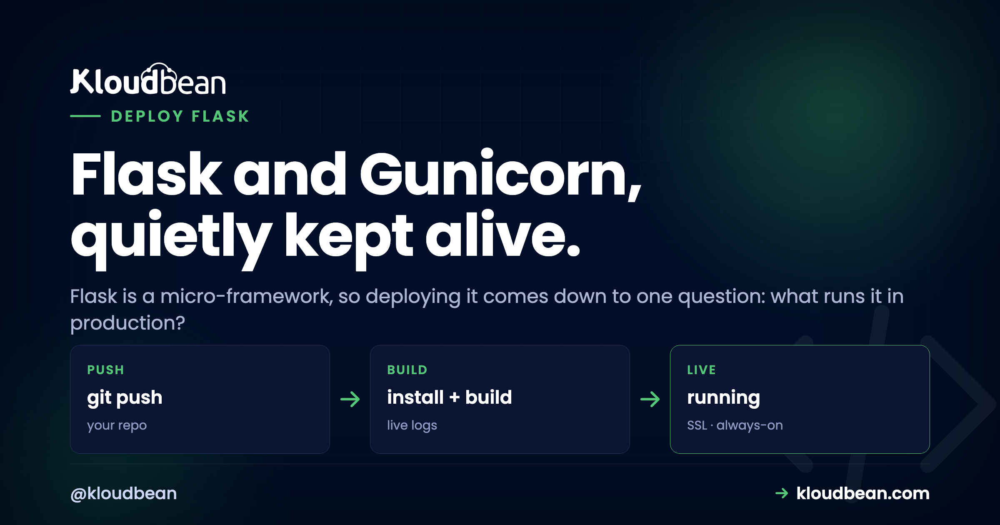
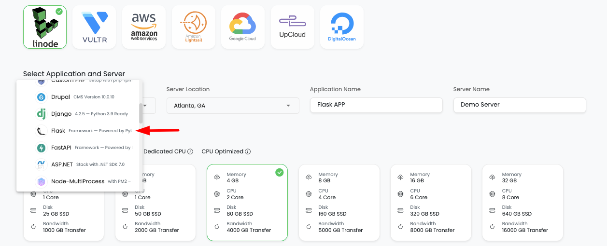
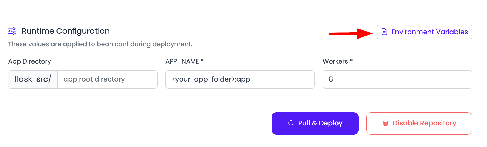

Deploy Flask in 10 Minutes: Then the Reference You'll Keep

Flask is a micro-framework. It hands you just enough to build a web app and then gets out of your way. If you are still at the stage of staring at the localhost URL in your terminal and wondering why nobody else can open it, start there. That minimalism is a joy while you build, and it leaves one honest question when it's time to deploy a Flask app for real: what actually runs it? The command you've been using won't do. Flask itself tells you so, right there in the terminal.
Run flask run and it prints a warning in plain English: this is a development server, don't use it in a production deployment, use a production WSGI server instead. That's the whole article in one line. The production WSGI server is Gunicorn. Below is the fast path to live, then a reference you'll come back to.
Add gunicorn to requirements.txt, then start your Flask app with gunicorn app:app --bind 0.0.0.0:$PORT instead of flask run. Gunicorn runs a master process plus several sync workers, so it handles real concurrent traffic and restarts a worker if one dies. Bind the port the platform assigns, set your secrets as env vars, and you're done.
Why the built-in server can't take real traffic
The server behind flask run is Werkzeug's development server. It's built for one job: fast feedback while you code, with the auto-reloader and a friendly debugger. It's not built to sit on the public internet. It handles concurrency poorly, it has no process supervision, and running it with debug=True exposes an interactive debugger that lets a visitor execute Python on your box. That last part isn't a style nit, it's a genuine remote-code-execution hole.
So my opinion is easy here: Flask's own warning is correct, so don't argue with it. Put Gunicorn in front and move on. Gunicorn is a real WSGI server. It runs a master process that binds the port and supervises a pool of worker processes, and each worker runs your app. That's what turns "it works on my machine" into something that survives strangers hitting it.
Deploy a Flask app in 10 minutes
Assume you have an app.py that defines app = Flask(__name__) and a requirements.txt. Here's the whole path on Kloudbean:
- Add Gunicorn to
requirements.txt(one line:gunicorn). It's the only new dependency deploying adds. - Push the project to GitHub.
- Provision a small server. Flask apps are light, so a modest box is plenty. Pick one of seven clouds and a size, and launch.
- Connect the repo under Deploy Code, and set Install to
pip install -r requirements.txt. - Set the Start command to
gunicorn app:app --bind 0.0.0.0:$PORT. (Whatapp:appmeans is two sections down.) - Paste your environment variables:
SECRET_KEY, any API keys, a database URL if you have one. - Pull & Deploy. The platform installs your dependencies, starts Gunicorn, gives you a domain, and puts free HTTPS in front.

A basic Flask app really is a few-minutes deploy, because there's so little to it. The start command is the one line that matters:

pip install -r requirements.txt, Start runs gunicorn app:app --bind 0.0.0.0:$PORT. Everything below is the "why" and the "when you need more."Reference: what app:app (or wsgi:app) means
The start command gunicorn app:app looks cryptic, but it's just two names split by a colon: module:callable. The first part is the module (the file app.py, minus the .py). The second is the WSGI object inside it. You wrote app = Flask(__name__), so the object is app. Larger projects use the app factory pattern, where a function builds the app. Then you expose it in a small wsgi.py and point Gunicorn at that instead.
# app.py (simple): the Flask object lives right here
app = Flask(__name__)
# start command: gunicorn app:app --bind 0.0.0.0:$PORT
# wsgi.py (app factory): build the app, then expose it as "app"
from myapp import create_app
app = create_app()
# start command: gunicorn wsgi:app --bind 0.0.0.0:$PORTThat's the whole rule: gunicorn <file>:<object>. Get it wrong and Gunicorn says it can't find your application object. Now you know exactly why, and exactly what to change.
Reference: how many Gunicorn workers?
Gunicorn runs your app in several worker processes so it can handle more than one request at once. The well-worn starting formula is (2 × CPU cores) + 1: on a 1-core box that's 3 workers, on 2 cores it's 5. You set it with a flag, and you can add a timeout or threads while you're there:
| You want | Start command |
|---|---|
| Simple default | gunicorn app:app --bind 0.0.0.0:$PORT |
| Set worker count | gunicorn app:app --workers 3 --bind 0.0.0.0:$PORT |
| Add a timeout | gunicorn app:app --workers 3 --timeout 60 --bind 0.0.0.0:$PORT |
| Threads per worker | gunicorn app:app --workers 3 --threads 2 --bind 0.0.0.0:$PORT |
Two failure modes sit at the extremes. Leave it at a single worker and every request queues behind the one before it, which is the bottleneck the diagram warns about, and the app feels slow for no obvious reason. Crank it to 50 and each worker's own memory footprint adds up until a small box thrashes and slows down anyway. Start with the formula, watch memory, adjust from there. Reach for --timeout only if you have slow endpoints Gunicorn keeps killing at its default 30 seconds.
Reference: never flask run in production
Worth stating flatly, because it's the number-one Flask deploy mistake: don't ship flask run or app.run() to production. Both start the development server, and debug=True hands visitors a debugger that runs code on your server. In production, Gunicorn is the server and debug is off. Set FLASK_DEBUG=0 or simply don't enable it, and let Gunicorn do the serving. The moment you catch yourself thinking "I'll just run it the way I do locally," that's the mistake.
Reference: static files, secrets, and a database
Three quick pieces that cover most real Flask apps:
- Static files. Files in your
static/folder work as-is, but for production it's nicer to let something purpose-built serve them. WhiteNoise is the least-effort win:pip install whitenoise, wrap your app, and it serves static assets efficiently with caching, no extra config. - Secrets and config. Flask's
SECRET_KEYsigns sessions, so set it as an environment variable and keep it stable. Change it between deploys and you log everyone out. API keys and database URLs live in the environment too, never in the repo. The full reasoning is in environment variables, done right. - A database. Flask ships without one on purpose. If your app stores data, launch a managed Postgres or MySQL and connect with a URL you set as an env var. Your code (via SQLAlchemy or a driver) reads it and connects. Running it on the same box is covered in host your app, API, and database on one server.

SECRET_KEY, the database URL and API keys from here, so nothing sensitive lives in the repo.Reference: when it won't start
Most first-deploy failures fall into a short list, and each has a clear tell in the logs:
- "Failed to find application object" / "No module named app". Your Start command doesn't match your file or variable. Fix the
module:objectpart. - App starts but the URL times out. You bound a fixed port instead of
$PORT. This is the one we see most: someone keepsapp.run(port=5000)or hard-codes:5000in the bind, the platform's router can't reach it, and the page just hangs. Bind0.0.0.0:$PORTand it's gone. - "ModuleNotFoundError" for a package you use. It's missing from
requirements.txt. Add it and redeploy; the build installs only what's listed. - "WORKER TIMEOUT", workers being killed. A slow request is exceeding Gunicorn's default 30-second limit. Raise
--timeout, or move the slow work to a background task.
Every one of those tells shows up in the log, and you read it from the dashboard: Application Administration → Logs Viewer. The logs are grouped into tabs. App Errors is where Gunicorn's tracebacks and worker-timeout lines land, so it's the first tab to open on a 503, because a 503 means the app isn't running. App Info holds the app's informational output, the "Starting gunicorn" and "Booting worker" lines included, and Web Requests Logs is the access log for requests the web server handled. Search is built in, which is how you find one ModuleNotFoundError without reading a whole file. Deploy-time failures are kept separately in Build and Deployment History, streaming live as the build runs. The same two files are on disk at /home/admin/hosted-sites/<app_system_user>/app-logs/ (app.error.log and app.info.log) if you'd rather use a terminal or the File Manager. Read the log first, before changing code on a hunch. The full 503 playbook is here.

What you own, what Kloudbean runs
Flask runs on Python, and Python is right at home on a Linux server, so nothing here is a workaround. Kloudbean runs the box: it keeps Gunicorn's master alive and restarts it if it ever exits, terminates HTTPS in front, and takes server-level backups. You own the Flask app, its worker count, its secrets, and its data. Because Flask asks so little of a server, it's one of the cheapest things to run well; a small box carries it comfortably. Building an async API instead of a classic app? That's deploy a FastAPI app. Something bigger and batteries-included? Deploy a Django app.
You built the app. Give it a real home.
Move the whole thing onto a managed server you own: always-on processes, a managed database for real data, object storage for uploads, and Git deploys with live build logs.
- ✓ Managed databases
- ✓ Always-on processes
- ✓ Object storage
- ✓ Automatic backups
- ✓ Free SSL
- ✓ Git deploy
- ✓ Free migration
Plans from $8/mo · Free migration assistance · Free trial
FAQ
How do I deploy a Flask app to production?
Add gunicorn to requirements.txt, push to GitHub, connect the repo, set Install to pip install -r requirements.txt and Start to gunicorn app:app --bind 0.0.0.0:$PORT, add your environment variables, and deploy. The platform serves it over HTTPS.
What does app:app mean in the Gunicorn command?
It's module:object. The first app is your app.py file; the second is the Flask object inside it (app = Flask(__name__)). If your file or variable is named differently, adjust it, for example wsgi:app for an app factory exposed in wsgi.py.
What's the app factory pattern, and how do I run it with Gunicorn?
An app factory is a create_app() function that builds and returns the Flask app. Expose the result in a small wsgi.py (app = create_app()) and start it with gunicorn wsgi:app --bind 0.0.0.0:$PORT. Gunicorn just needs a module and a WSGI callable to import.
Why shouldn't I use flask run in production?
flask run is a single-threaded development server not built for real traffic, and it even prints a warning saying so. Running with debug=True exposes a debugger that lets visitors execute code on your server. Use Gunicorn as the production server and keep debug off.
How many Gunicorn workers should I use?
A common starting point is (2 × CPU cores) + 1, so 3 workers on a 1-core server. Set it with --workers. Start there for a small app and increase only when real traffic calls for it. One worker means one request at a time, which is the usual cause of a Flask app feeling slow.
Why does my Flask app deploy but the URL just hangs?
Almost always because it bound a hard-coded port instead of the one the platform assigned. Bind 0.0.0.0:$PORT in the Gunicorn command so the web server in front can reach it. A fixed port like 5000 leaves the router talking to nothing.
Does Flask need a database?
Only if your app stores data. Flask ships without one by design. If you need persistence, launch a managed Postgres or MySQL and connect with a connection string set as an environment variable.